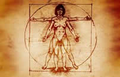
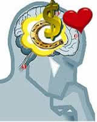

LEI DA ATRAÇÃO
O Poder do: Eu Sou...
Êxodo 3
6 Disse mais: Eu sou o Deus de teu pai, O Deus de Abraão, o Deus de Isaque, e o Deus de Jacó. E Moisés escondeu o rosto, porque temeu olhar para Deus.
13 Então disse Moisés a Deus: Eis que quando eu for aos filhos de Israel, e lhes disser: O Deus de vossos pais me enviou a vós; e eles me perguntarem: Qual é o seu nome? Que lhes direi?
14 Respondeu Deus a Moisés: EU SOU O QUE SOU. Disse mais: Assim dirás aos olhos de Israel: EU SOU me enviou a vós.
Deus é o criador do universo, Você é parte de Deus, criada a sua imagem semelhança. Você é um criador. Toda vez que você profere as frases: Eu sou, Eu não sou, Eu posso, Eu não posso, Eu consigo, Eu não consigo, Eu, Eu, Eu, Eu... Você está criando a sua vida, quer esteja consciente disso ou não.
“Quer você ache que pode, ou quer você ache que não pode, de qualquer forma você está certo”. Henry Ford
Como aplicar a Lei da atração em sua vida
Retirado do Livro: The Secret O Segredo de Rhonda Byrne
1° passo: PEÇA
O que você de fato quer? Sente-se e escreva numa folha de papel, usando o presente do indicativo. Você poderia começar assim: “Eu estou tão feliz e grato neste momento que...” E então explique como você quer que sua vida seja, em qualquer área.
Você tem a oportunidade de escolher o que você quer, porém deve ter certeza do que quer. Se você não tiver certeza, a lei da atração não poderá lhe proporcionar o que quer. Você estará emitindo uma freqüência confusa e só atrairá resultados confusos.
Dê uma ordem ao universo, informe-o sobre o que você quer, e ele reagirá aos seus pensamentos.
Agora que você sabe que pode ter, ser ou fazer qualquer coisa o que não existem limites, o que você quer?
2° passo: ACREDITE
Acreditar que já é seu. Fé inabalável. Acreditar no invisível.
No momento em você pede alguma coisa, e acredita e sabe que já a tem no invisível, o Universo inteiro se move para deixá-la visível. Você tem de agir, falar e pensar como se a estivesse recebendo agora. Por quê? O universo é um espelho, e a lei da atração está refletindo de volta para você seus pensamentos dominantes. Portanto não faz sentido que você tenha de se ver recebendo-a? Se em seus pensamentos existe a informação de que você ainda a não a tem, você continuará atraindo o não tê-la. Você tem de acreditar que já a possui, que a recebeu.
Como é que você chega ao ponto em que acredita? Comece fazendo de conta. Comporte-se como uma criança e faça de conta. Aja como se você já tivesse aquilo. À medida que fizer de conta, você começará a acreditar que recebeu. O Universo está reagindo aos seus pensamentos predominantes o tempo todo, não só no mento em você pede.
“Por isso vos digo que tudo o que pedirdes em oração, crede que recebestes, e será vosso.” Marcos 11:24
3° passo: RECEBA (SINTA)
O terceiro e último passo do processo é receber. Comece a se sentir maravilhado a esse respeito. Sinta como você se sentirá assim que essas coisas chegarem. Sinta isso agora.
Este é um universo de sensações. Se você acredita apenas em intelectualmente em alguma coisa, mas não possui nenhuma sensação correspondente, você não tem necessariamente poder suficiente para manifestar o que deseja em sua vida. Você tem de sentir isso.
O mais importante na lei da atração é SENTIR
Por exemplo: Riqueza é um estado de espírito, se você não acreditar que pode ser rico, que você merece ser rico, dificilmente você será rico.
“Bilhete Premiado!”
Valor: 1.000.000.00 milhão de Reais
Resgatável na próxima segunda-feira
-Como você vai se sentir quando tiver um milhão de reais?
-Vou me sentir assim, assim, assim...
-Então, se você passar a sentir-se assim desde agora, vai ter mesmo um milhão de reais.
“Estar no carro”, e não “eu gostaria de ter esse carro” ou “um dia eu vou ter esse carro”.
A seguir, frases que podem ajudar a criar a sua vida
- O pensamento é a Força criadora.
- Eu posso adotar neste momento novas formas de pensar que contribuam para minha felicidade e meu sucesso.
- A bondade flui agora em minha vida.
- Eu sou quem eu desejo ser.
- Eu crio meu mundo através dos meus pensamentos.
- Eu sou capaz de manifestar a realidade que eu desejo.
- Eu aprecio e agradeço o que crio em meu mundo.
- Eu crio minha realidade com amor e gratidão.
- Eu sou 100% responsável pelos rumos da minha vida. “Não culpe seus pais por tudo aquilo que você não é, ou pelo o que eles não puderam te dar: Você é 100% responsável pelo modo como seu destino caminha”.
- Princípio de riqueza: “Abençoe aquilo que você quer”.
- Eu admiro as pessoas ricas. Eu abençôo as pessoas ricas. Eu amo as pessoas ricas e bem sucedidas. E vou ser uma pessoa rica também.
- Eu imito as pessoas ricas e bem-sucedidas. Eu busco a companhia de pessoas ricas e bem-sucedidas. Se elas podem, eu também posso!
- Mereço e tenho dinheiro para tudo o que eu quiser ter.
- Sou uma pessoa rica e próspera, semelhante aos homens mais ricos e prósperos do mundo.
- Mereço e tenho uma boa vida.
- Mereço e tenho saúde muita saúde, mereço e tenho amor, muito amor.
- Estou em processo de atrair tudo aquilo que preciso fazer, saber ou ter para atrair o meu desejo ideal.
- A lei da atração está se expandindo e orquestrando tudo o que precisa acontecer para que o meu desejo se realize.
- A razão é que a afirmação está em rigorosa concordância com a verdade, e, quando a verdade aparece, toda forma de erro ou discórdia deve forçosamente desaparecer.
- Eu sou inteira, perfeita, forte, poderoso, amoroso, harmonioso e feliz.
- Quando está consciente, você está no presente e sabe o que está pensando. Você assumiu o controle de seus pensamentos, e é aí que se encontra todo o seu poder.
- O que estou pensando agora? O que estou sentindo agora? “Lembre-se de lembrar”
- O verdadeiro segredo do poder é a consciência do poder.
- Alegria, amor, liberdade, felicidade, riso. É disso que se trata. ”Se não é divertido não faça”.
- Logo, a felicidade interior é concretamente o combustível do sucesso.
- Acredito firmemente no poder da minha mente. Porque é Deus no meu subconsciente.
- Vivo na alegre expectativa do melhor e invariavelmente o melhor me acontece.
- Onde existe determinação, a solução será encontrada.
- GRATIDÃO é a mãe de todos os outros sentimentos.
- Ser pobre é diferente de não ter dinheiro. Pobreza é um estado de espírito. E a falta de dinheiro é uma situação temporária.
- Se você tem problema de dívida que não está conseguindo pagar, está faltando perdoar alguém. Dívida é falta de perdão no passado.
- Intenção sem ação é ilusão. Ouse fazer e o poder lhe será dado.
- Segredo da prosperidade: O processo de chegar lá é a qualidade de estar lá.
- Independência financeira é quando você nunca faz nada que não queira, por dinheiro, e nunca deixa de fazer qualquer coisa que você queira por falta de dinheiro.
- O que pensarmos que irá acontecer é o que certamente o nosso cérebro e o Universo se encarregarão de fazer acontecer.
- Eu elimino a escassez da minha vida.
- Eu compartilho a minha Prosperidade com os outros.
- Eu sou rico. Eu tenho uma mente milionária.
- Não se conforme. O mundo tem muitas coisas boas a oferecer para quem tem a ousadia de buscar.
O importante é sempre se sentir bem!
Fonte - Livros: The secret O Segredo, de Rhonda Byrne;
Os Segredos da Mente Milionária, de T. Harv Eker;
Faça dar Certo, de Luiz Antônio Gasparreto.